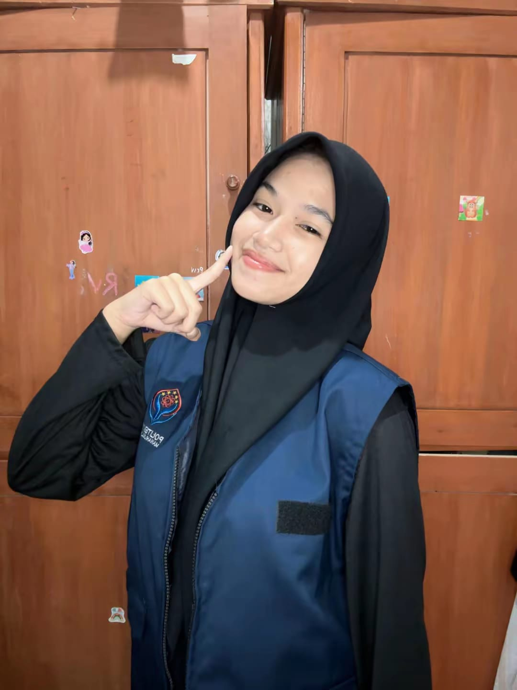

D4 Teknologi Rekayasa Perangkat Lunak
Saya seorang mahasiswi program studi Teknologi Rekayasa Perangkat Lunak semester 3 dengan IPK 3,97. Saya aktif di berbagai organisasi kampus dalam bidang media juga mempunyai hobi membaca novel, buku sejarah dan jurnal, menonton film serta traveling.
Kompetisi Keahlian: Matematika, Kimia, Biologi (MIPA)
Prodi Teknologi Rekayasa Perangkat Lunak